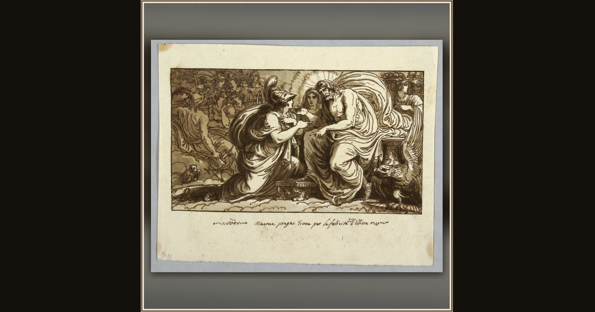

Minerva Asking Jupiter for the Happiness of Ulysses or Minerva Questions Jupiter on the Destiny of Ithaca
Felice Giani · 1802–1805 · Cooper Hewitt, Smithsonian Design Museum · New York, USA
Giani sketches Minerva—Athena’s Roman name—appealing to Jupiter, as the goddess asks Zeus to remember the stranded Odysseus and let the homecoming begin. Explore its place in Book I of the Odyssey.